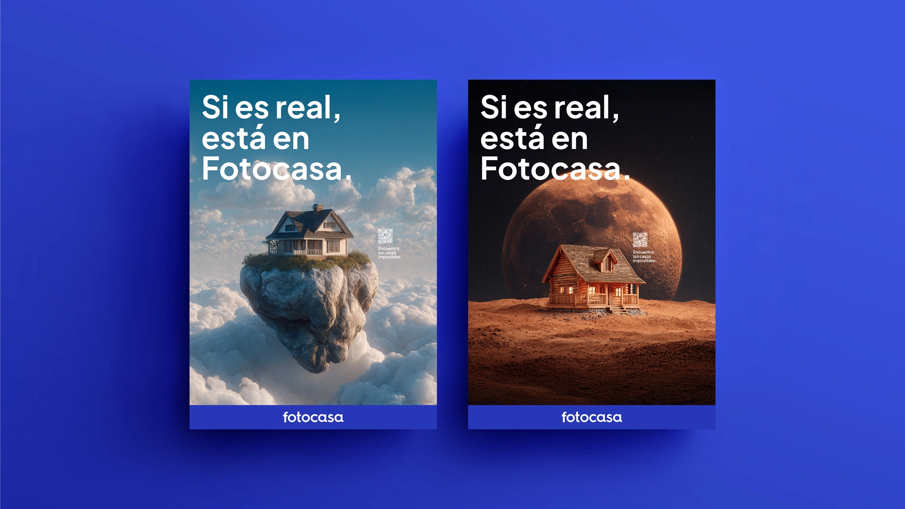
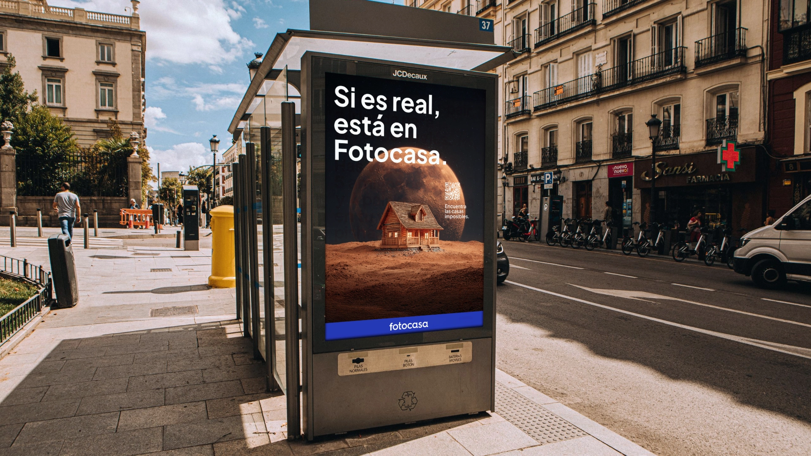
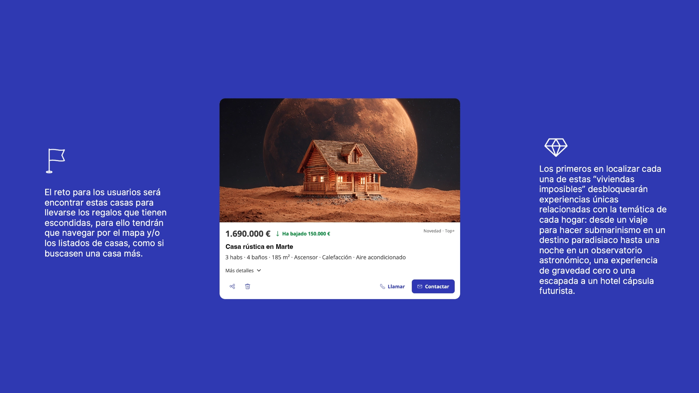
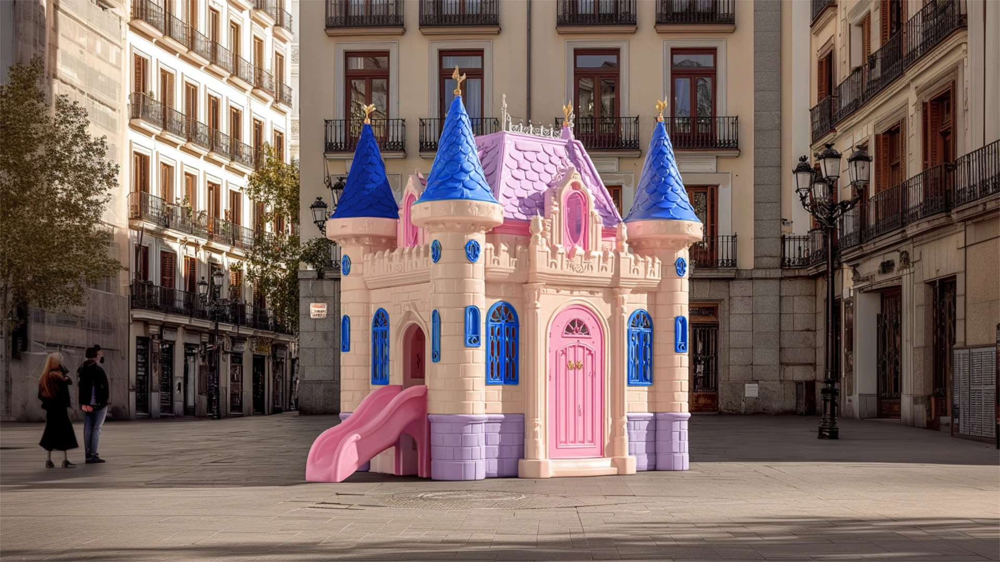

For Fotocasa, we developed a campaign built around a participatory activation designed to drive engagement and connect with users through play. The mechanic invited users to discover “impossible homes” hidden within the platform, which unlocked unique experiences—bringing to life the idea: if it’s real, it’s on Fotocasa.
Para Fotocasa presentamos una campaña articulada en torno a una activación participativa orientada a generar engagement y conectar con el usuario desde el juego. La dinámica planteaba descubrir “casas imposibles” ocultas en la plataforma que desbloqueaban experiencias únicas, materializando el concepto: si es real, está en Fotocasa.



To bring the concept “If it’s real, it’s on Fotocasa” to life, we tapped into something we’ve all experienced: the imagination we had as kids when dreaming about our future homes. A castle, an Indian tipi, a treehouse… When we were little, a home could be anything we imagined it to be. We turned this insight into a series of unexpected installations placed around the city, bringing those childhood dream homes into the real world and creating a playful moment of engagement with people on the street. A simple way to connect that universal childhood feeling with the campaign idea: whatever you can imagine as your future home, if it’s real, it’s on Fotocasa.
Para reforzar el concepto “Si es real, está en Fotocasa”, quisimos conectar con algo que todos hemos vivido: la imaginación que teníamos de pequeños cuando soñábamos con nuestra futura casa. Un castillo, un tipi indio, una casa en un árbol… Cuando éramos niños, una casa podía ser cualquier cosa que fuéramos capaces de imaginar. Llevamos ese insight al mundo real creando una serie de instalaciones inesperadas en distintos puntos de la ciudad, convirtiendo esas casas que imaginábamos de pequeños en intervenciones urbanas capaces de sorprender y generar conversación. Una forma de conectar ese sentimiento tan universal con la idea de campaña: por muy increíble que sea la casa que imaginas, si es real, está en Fotocasa.